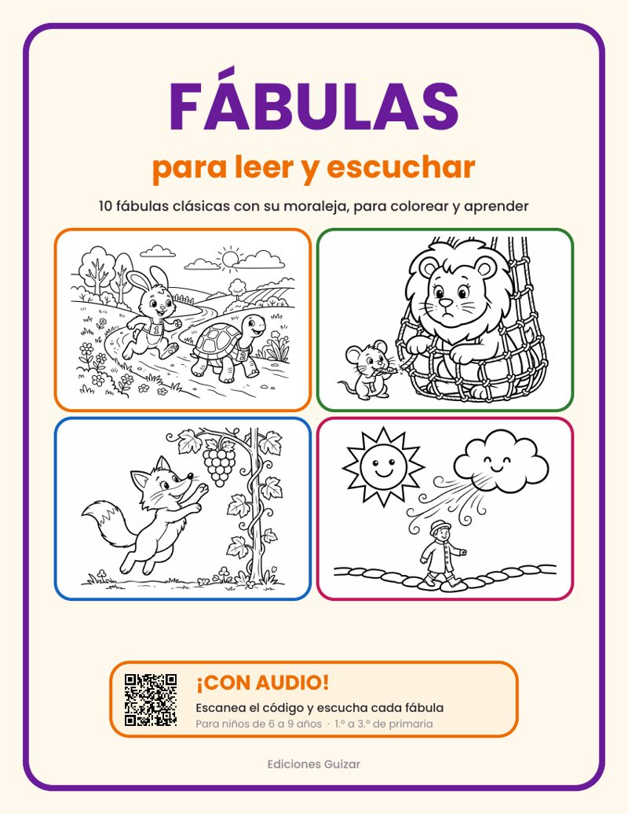
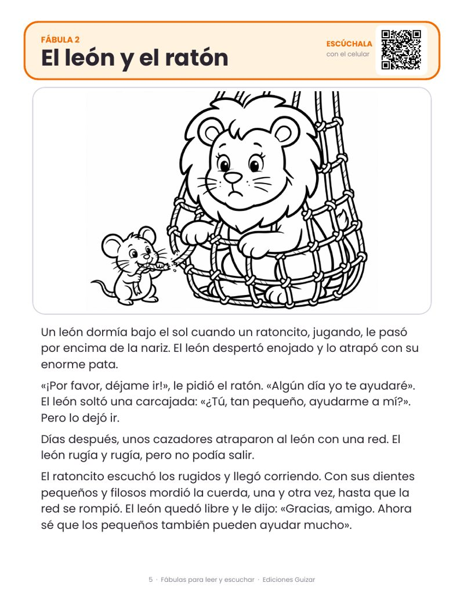
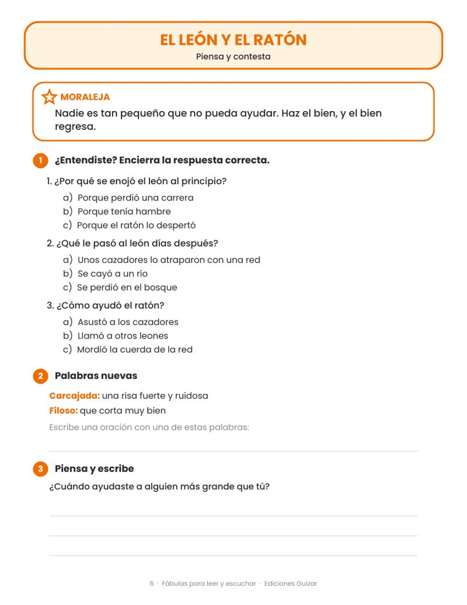
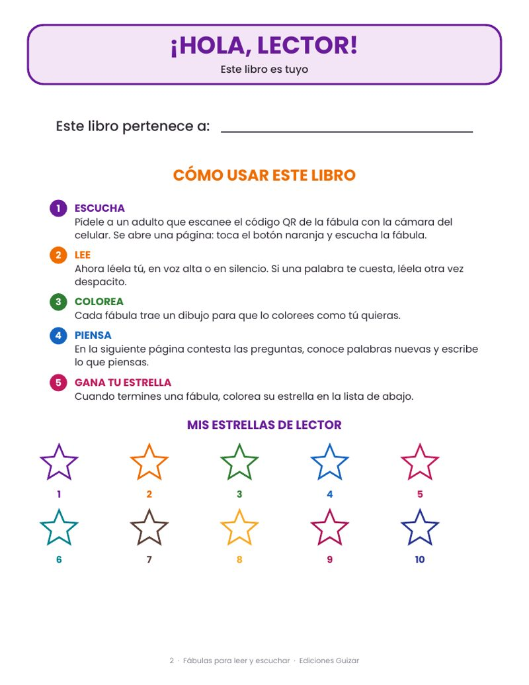
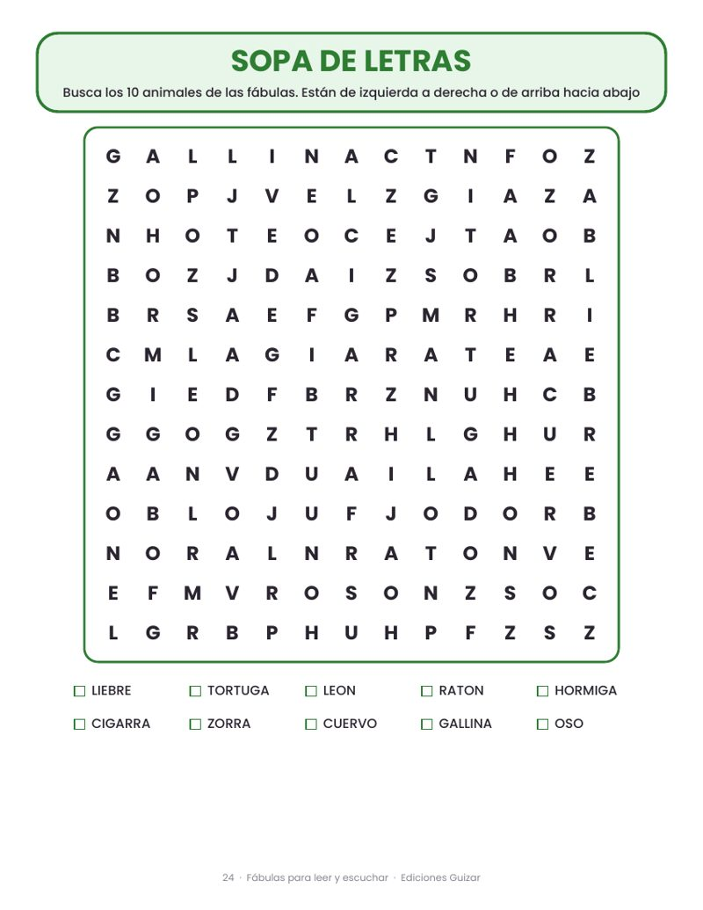
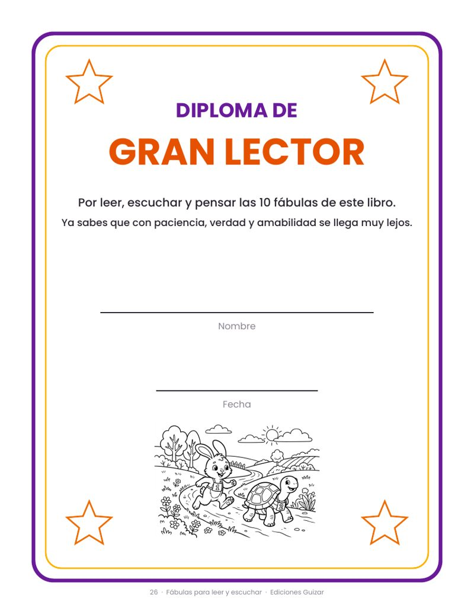

🎧 Audiolibro: 28 páginas en PDF + 10 audios
- 10 fábulas narradas: escanea el código QR y escúchalas mientras cada palabra se ilumina para seguir la lectura
- Un dibujo para colorear en cada fábula
- Moraleja, preguntas, palabras nuevas y "piensa y escribe"
- Une con líneas, sopa de letras y escribe tu propia fábula
- Diploma de Gran Lector y respuestas para papás
$59 MXN
Comprar con Mercado Pago
Tarjeta, OXXO o SPEI. Al aprobarse tu pago, descargas tu PDF al instante e imprímelo las veces que quieras.
¿Cómo suena? Así escuchan los niños cada fábula: la palabra que se lee se ilumina en rojo para que la sigan con el dedo.
▶ Escuchar "La liebre y la tortuga"
▶ Escuchar "La liebre y la tortuga"
Mira algunas páginas





Las 10 fábulas
- La liebre y la tortuga
- El león y el ratón
- La cigarra y la hormiga
- El pastorcito mentiroso
- La zorra y las uvas
- El cuervo y la jarra
- La gallina de los huevos de oro
- La zorra y la cigüeña
- Los dos amigos y el oso
- El viento y el sol
¿Por qué les va a gustar?
- Escuchar antes de leer ayuda a entender la historia y a aprender cómo suena una buena lectura.
- Cada fábula deja una enseñanza: decir la verdad, ser paciente, ayudar, compartir, ser amable.
- Practican comprensión lectora con preguntas de opción múltiple y respuestas incluidas.
- Aprenden palabras nuevas y escriben con sus propias palabras.
¿Cómo funciona?
- Compra con Mercado Pago (tarjeta, OXXO o transferencia).
- Al aprobarse el pago, descargas tu PDF en ese momento.
- Imprime en tamaño carta. Los dibujos son de contorno para colorear.
- Escanea el código QR de cada fábula con la cámara del celular para escucharla (se necesita internet).
¿Ya compraste y cerraste la página? Recupera tu descarga aquí